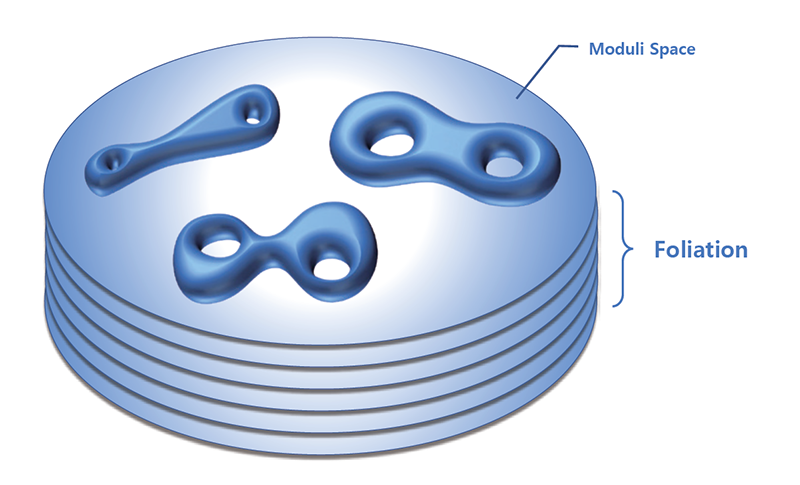

KAIST Top 10
KAIST Top 10
KAIST RESEARCH ACHIEVEMENTS
New method to understand 6n-dimesional spaces from dynamics on the 1-dimensional spaces
Department of Mathematical Sciences Hyungryul Baik
Summary
This study is related to the structure of moduli space which is the space of all the geometric shapes that a surface can have. Moduli space is high-dimensional, and it is difficult to directly understand such a high-dimensional space. The best way to understand a given space is to break up the given space into subspaces of lower dimensions and build up an understanding of the entire space from lower levels of understanding. Surprisingly, splitting n-dimensional space into n-1-dimensional space is related to the dynamics of one-dimensional space. In this study, we found the complete answer to the differential possibility of the one-dimensional dynamics related to the moduli space, and presented a methodology to understand the 6n-dimensional moduli space.
Background (objectives)
The world in which we live is three-dimensional, but when we recognize most objects, we perceive them through the shape of the outer surface of the object which is two-dimensional. Hence, understanding the geometric shapes of various surfaces is a fundamental question that is closely related to our lives. The space of all possible geometric shapes that a given surface can have is called a moduli space, and while the surface is two-dimensional, the moduli space is fairly a high-dimensional space. For example, if you consider a surface that corresponds to a two-person tube used to ride a water slide in a water park, the moduli space of this surface is a six-dimensional space. This study provides mathematical basis for understanding the geometry of moduli spaces from one-dimensional dynamical systems.
Contents
The set of all symmetries of any space has a structure called group (group is a set of binomial operations that satisfy some conditions). In particular, the so-called fundamental group contains a lot of information about the shape of the given space. The fundamental group of moduli space mentioned above is called mapping class group. In this study, the action of the mapping class group on the one-dimensional space is investigated and the study of the right-angled Artin groups is a key ingredient. In the modern society, the analysis of the structure of a complex network with many nodes is being performed in various fields, and these networks can be viewed as graphs composed of only dots and lines. Right-angled Artin groups are defined from graphs, and predictably, (insert space) there is a close relationship between the combinatorial structure of the graph and the algebraic structure of the corresponding right-angled Artin group. When closed curves on a surface are used as nodes, and two nodes that do not meet on that surface are connected by an edge, a graph is obtained. This is called a curve graph. It is known that when a graph appears as a subgraph of a curve graph, the corresponding right-angled Artin group can be represented as a subgroup of the mapping class group.

Using this, it is possible to deal with many right-angled Artin subgroups in the mapping class group. Rightangled Artin groups have simple definitions, so they are easy to be described, and many mathematical tools have been developed to study them. With the exception of a few very simple surfaces, the curve graphs of all surfaces have a graph that looks like a line with four dots in a line. For this reason, the right-angled Artin group of a graph in which four dots are connected in a line becomes a subgroup of the mapping class group of these surfaces. In fact, this also holds for arbitrary finite-index subgroups of mapping class groups. One of the main findings of this study is to demonstrate that the right-angled Artin group obtained from a graph with four dots connected in a line cannot act smoothly on a compact one-dimensional manifold. Using this result, it is proved that any finite-index subgroup of the mapping class group of almost all surfaces cannot act smoothly on a compact one-dimensional space. The original problem for moduli space which is about the geometry of the surface is turned into an algebraic problem of finding a specific subgroup in the mapping class group, and again into an analysis problem about differentiability of functions on the one-dimensional space. It is a distinctive feature of the field of low-dimensional topology that it combines various areas of mathematics into one beautiful integrated theory.
Expected effect
But how does the result of the differentiability of this one-dimensional dynamical system help us to understand the moduli space? First of all, one way to understand a given space is to consider the space as a stack of subspaces with lower dimensions, and to understand how those subspaces are stacked. Such a structure is called a foliation. A lot of fundamental results in the three-dimensional geometry/topology were obtained by William Thurston, and in particular, he made numerous achievements about the foliation structure of 3D space as a stack of 2D spaces. For this achievement, he won the Fields Medal in 1982. As an example, if the surface corresponding to one layer of the foliation is a compact surface, in fact, all other layers are also compact surfaces of the same topological shape, and a given three-dimensional manifold is just a thickening of the surface. However, the key idea, which is important for understanding the foliation of the 3D space, is to determine whether the fundamental group of the given 3D space can act smoothly on a 1D line segment with one boundary point omitted. Expanding Thurston's work, it is hoped that information on whether subgroups of the mapping class group can act smoothly on compact onedimensional manifolds will help to further understand the foliation structure of this moduli space. The study of the structure of the Moduli space is mathematically very important. For instance, Maryam Mirzakhani was the first woman to be awarded a Fields Medal in 2014 for her study on the geometry of moduli space.
Research Outcomes
[Paper 1] H. Baik, S. Kim, T. Koberda, “Unsmoothable group actions on compact one-manifolds”, Journal of the European Mathematical Society 21(8), 2333-2353 (2019). [2018 Impact Factor = 1.78]
[Paper 2] H. Baik, S. Kim, T. Koberda, “Right-angled Artin Subgroups of C∞ diffeomorphism group of the real line”, Israel Journal of Mathematics 213(1), 175-182 (2016).
[Award] Sangsan Young Mathematician Award from the Korean Mathematical Society(2018)
연구비지원
European Research Council Grant Nb.10160104
Research Tasks in Basic Science of Samsung Science & Technology Foundation